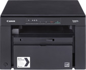

| Фото и имя модели | Тип | Краткое описание | Рейтинг | Цена |
|---|---|---|---|---|
|
Canon i-SENSYS MF3010
 |
Принтер | МФУ, лазерный, черно-белый, формат A4 (210x297 мм), скорость ч/б печати 18 стр/мин, разрешение 600x400 dpi | ✪ ✪ ✪ ✪ | 515,16 – 694,77 р. |
|
Canon PIXMA MG2540S
|
Принтер | МФУ, струйный, цветной, формат A4 (210x297 мм), скорость ч/б печати 8 стр/мин, скорость цветной печати 4 стр/мин, разрешение 4800x600 dpi | ✪ ✪ ✪ ✪ ✪ | 63,45 – 99,00 р. |
|
Lexmark MX317dn
|
Принтер | МФУ, лазерный, черно-белый, формат A4 (210x297 мм), скорость ч/б печати 35 стр/мин, разрешение 1200 dpi, факс, LAN | ✪ ✪ | 299,00 – 397,40 р. |
|
HP LaserJet Pro M28w
|
Принтер | МФУ, лазерный, черно-белый, формат A4 (210x297 мм), скорость ч/б печати 18 стр/мин, разрешение 600 dpi, Wi-Fi | ✪ ✪ ✪ | 350,00 – 460,00 р. |
|
Epson L22
|
Принтер | МФУ, струйный, цветной, формат A4 (210x297 мм), скорость ч/б печати 27 стр/мин, скорость цветной печати 15 стр/мин, разрешение 5760x1440 dpi, СНПЧ | ✪ | 427,46 р |
|
Авто-Комби Титан-А, встроенное СКНО, мобильный
|
Автономный кассовый аппарат | автономный/портативный, назначение: торговля/услуги/рестораны и гостиницы, работа с СКНО | ✪ ✪ ✪ | 285,00 – 325,00 р. |
|
Авто-Комби Титан-А, Wi-Fi, встроенное СКНО, мобильный
|
Автономный кассовый аппарат | Авто-Комби Титан-А, Wi-Fi, встроенное СКНО, мобильный | ✪ ✪ ✪ | 345,00 р. |
Novitus Sento Lan E

|
Автономный кассовый аппарат | активный системный, назначение: торговля/услуги/рестораны и гостиницы, работа с СКНО | ✪ ✪ | 692,00 – 696,00 р. |
|
Приборсервис ОКА-102К (блок СКНО устанавливается внутри)
|
Пассивный системный аппарат | Приборсервис ОКА-102К (блок СКНО устанавливается внутри) | ✪ ✪ ✪ ✪ ✪ | 310,00 р. |
|
Приборсервис ОКА-МК (блок СКНО устанавливается внутри)
|
Автономный кассовый аппарат | автономный/портативный, назначение: торговля/услуги, скорость печати: 6 строк/с, работа с СКНО | ✪ ✪ ✪ ✪ | 285,00 – 300,00 р./td> |